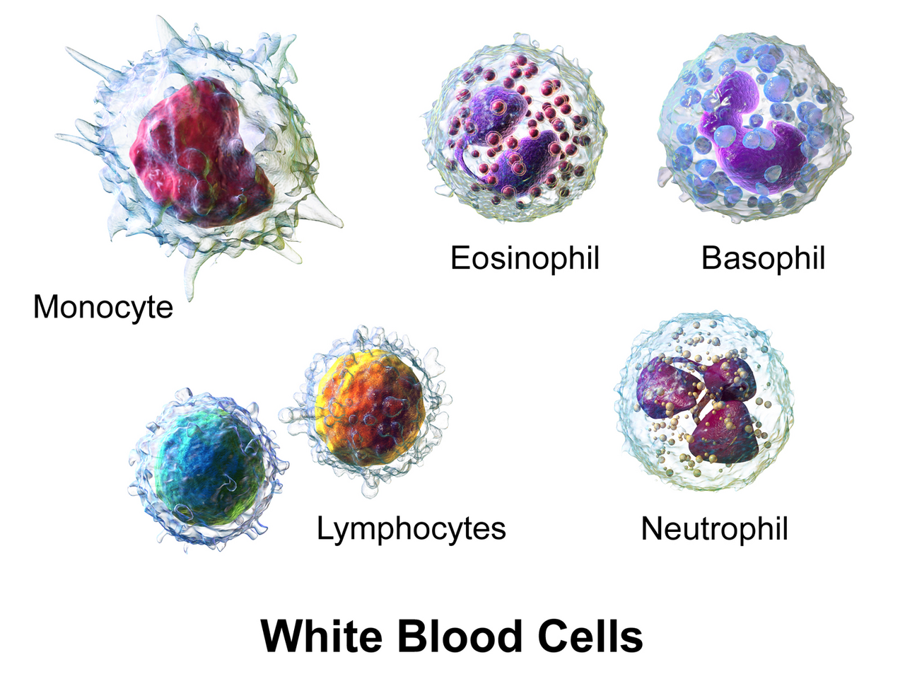
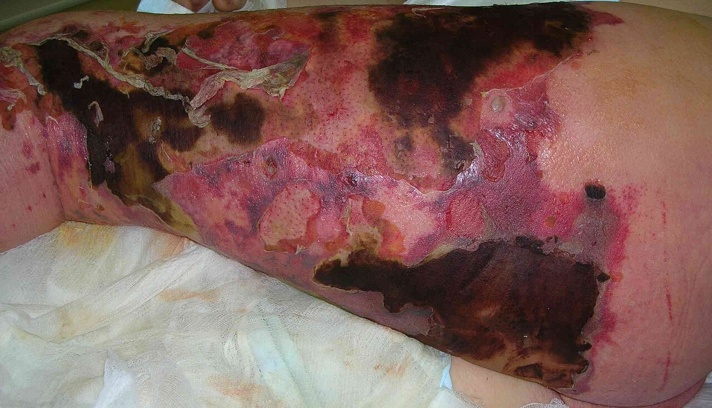
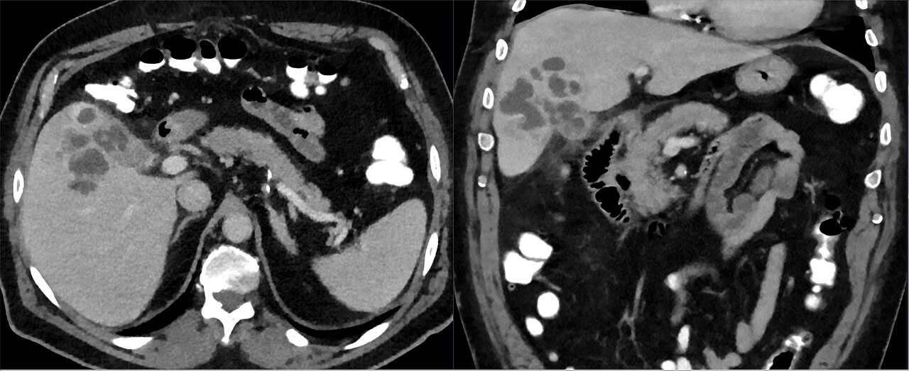
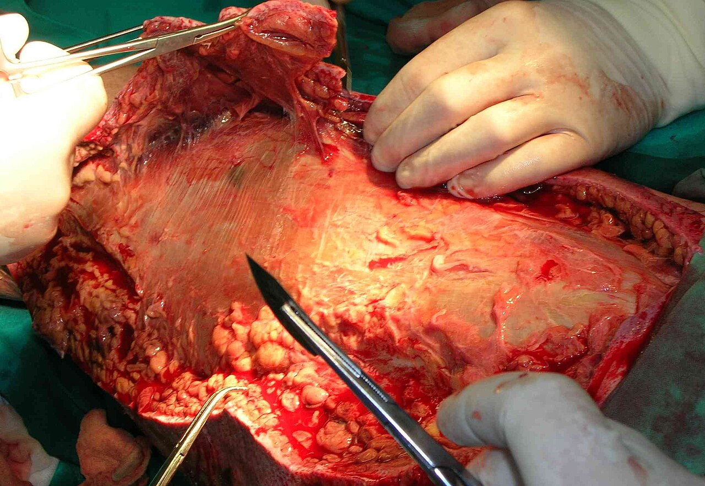

הגישה לחולה הספטי
מהתגובה הדלקתית ועד השעה הראשונה: הגדרות, החייאה, תרופות מכווצות כלים ושליטה במקור הזיהום
בסוף המפגש תדעו
- להסביר בקצרה את התגובה הדלקתית: מי מזהה את החיידק, אילו ציטוקינים משתחררים ולמה כלי הדם מתרחבים
- להגדיר ספסיס ושוק ספטי לפי Sepsis-3 ולהכיר את מקומם של SIRS, SOFA ו-qSOFA
- לפעול בשעה הראשונה: תרביות, אנטיביוטיקה, נוזלים, יעד לחץ דם ונוראדרנלין
- לחפש את מקור הזיהום ולהבין מה זה שליטה במקור: ניקוז, הטריה והוצאת גוף זר
- להכיר את הזיהומים הנרכשים בטיפול נמרץ ואת הטיפול התומך בחולה הספטי
איך הגוף מזהה פולש
תאי הדם הלבנים בתגובה לזיהום

👆 לחצו על תא כדי לקרוא מה הוא עושה
לרוב התא הראשון שמגיע לפציעה או לזיהום. נצמד לדופן, מתגלגל ויוצא לרקמה. בולע חיידקים, משחרר גרגירים עם אנזימים ופורש "רשת" (NET) שלוכדת חיידקים. משתתף גם בריפוי ובבניית כלי דם חדשים
המונוציט הופך למקרופאג׳ ברקמה. בולע חיידקים ומציג אנטיגנים. מקרופאג׳ מסוג M1 מפריש IL-1β ו-TNF-α ומגביר דלקת. סוג M2 מפריש IL-10 ומוביל לריפוי. תאי קופפר בכבד הם מקרופאג׳ים
תאי T מכוונים את התגובה התאית ותאי B מייצרים נוגדנים. שניהם יוצרים זיכרון חיסוני. בספסיס יש מוות מוגבר של לימפוציטים ולימפופניה, חלק מהדיכוי החיסוני. תאי NK הם 8–20% מהלימפוציטים בדם
יחד עם תאי פיטום הם מפרישים IL-4, שמכוון את התגובה לכיוון נוגדנים ואלרגיה ומרסן את התגובה התאית
דלקת ודיכוי חיסוני בו-זמנית
- SIRS: תגובה דלקתית מוגזמת לאירוע. CARS: תגובה נוגדת-דלקת חזקה מדי, שמובילה לדיכוי חיסוני
- פעם חשבו ששתי התגובות באות זו אחר זו. היום יודעים שהן מתרחשות יחד, בעוצמות שונות. לכן חולה אחרי ספסיס חוטף זיהומים נוספים
- רוב החולים מחלימים מהר. חלק "נתקעים" בטיפול נמרץ עם כשל איברים מתמשך: מחלה קריטית כרונית
- PICS: דלקת מתמשכת, דיכוי חיסוני וקטבוליזם. זיהומים חוזרים, דלדול שרירים ומוות איטי
ספסיס ושוק ספטי · Sepsis-3
מחפשים את המקור
- החולה במחלקה או בטיפול נמרץ לא תמיד "נראה ספטי": לא תמיד יש לויקוציטוזיס, אין חום בדיאליזה רציפה או ב-ECMO. יש גם סיבות אחרות לכשל נשימתי, בלבול ולקטט
- החתך הניתוחי: מסירים את כל החבישות. מחפשים אודם, חום, הפרשה מוגלתית ונמק
- סימנים מערכתיים: חום, דופק, לחץ דם, קצב נשימה
- החלל העמוק של הניתוח: אחרי ניתוח בטן בודקים בטן, אגן ופי הטבעת. אחרי ניתוח בגפה, בודקים את כל הגפה
- שאר המקורות בטיפול נמרץ: ריאות (מונשם), עירוי מרכזי, קטטר בשלפוחית, שלשול אחרי אנטיביוטיקה

למה החולה הספטי בשוק
מזהים ופועלים מהר
פרוטוקול של 6 שעות עם צנתר מרכזי ויעדים מוגדרים: תמותה 30.5% לעומת 46.5%. מחקרים אקראיים מאוחרים יותר לא הראו תועלת לפרוטוקול, כנראה כי הטיפול הרגיל כבר אימץ את עקרונותיו
כפי שמסוכם ב-Sabiston 22, פרק 33 עמ׳ 238 ופרק 46 עמ׳ 534תרופות מכווצות כלים וסטרואידים
אנטיביוטיקה לבד לא מנקזת מוגלה


זיהום באתר הניתוח
- הגדרה: זיהום בתוך 30 יום מהניתוח (90 יום אם הושתל גוף זר). שלוש רמות: שטחי, עמוק בחתך, באיבר או בחלל
- שכיחות 0.5–3%. הסיבה המובילה לאשפוז חוזר אחרי ניתוח. מעלה את התמותה פי 2–11
- אחרי פתיחת בטן מופיע בממוצע ביום ה-10. יותר מ-60% מתגלים אחרי השחרור
- 70–95% נגרמים מהפלורה של החולה עצמו
ארבעה מקורות שחוזרים
מה עוד החולה הספטי צריך
- סוכר: יעד מתחת ל-180. איזון הדוק (81–108) העלה תמותה בגלל היפוגליקמיה (NICE-SUGAR). להימנע מתנודות
- דם: עירוי רק מתחת להמוגלובין 7. בחולה לב יציב אפשר לשקול 8. אבל בדימום פעיל לא מחכים להמוגלובין
- מניעת פקקת: כל חולה נבדק. איחור של יותר מ-24 שעות קשור לפי 3 פקקות אחרי טראומה קשה. ספסיס מעלה את שיעור הכישלון של המניעה
- הגנה על הקיבה: בעיקר למונשמים מעל 48 שעות ולבעלי הפרעת קרישה. לא לכולם: דיכוי חומצה מעלה סיכון לדלקת ריאות ול-C. difficile
- ריאות: בתסמונת מצוקה נשימתית: נפח הנשמה 6–8 מ״ל לק״ג ולחץ פלטו עד 30. שכיבה על הבטן מורידה תמותה
- שיחה עם המשפחה: טיפול פליאטיבי מוקדם אינו הפסקת טיפול. בחולה מבוגר ושברירי כדאי לערב צוות פליאטיבי מוקדם
מחקרים שכדאי להכיר
1,563 חולים עם תת-לחץ דם מספסיס אחרי 1–3 ליטר. אסטרטגיה מגבילה (כ-2 ליטר פחות, תרופות מכווצות כלים מוקדם) מול ליברלית: תמותה 14.0% לעומת 14.9%, בלי הבדל
Shapiro NI et al. N Engl J Med 2023;388:499-5101,554 חולים. חציון של 1.8 ליטר לעומת 3.8 ליטר. תמותה ב-90 יום: 42.3% לעומת 42.1%. ההגבלה לא הזיקה וגם לא הועילה
Meyhoff TS et al. N Engl J Med 2022;386:2459-703,608 חולים, 55% בטיפול נמרץ. תמותה ב-90 יום: 14.5% עם 7 ימים לעומת 16.1% עם 14. הקורס הקצר לא נחות (לא כלל S. aureus)
BALANCE Investigators (Daneman N et al.) N Engl J Med 2025;392:1065-787,031 חולי ספסיס בטיפול נמרץ. תמותה ב-90 יום: 24.9% בעירוי רציף לעומת 26.8% במנות (לא מובהק). ריפוי קליני: 55.7% לעומת 50.0%
Dulhunty JM et al. JAMA 2024;332:629-37חמישה דברים לקחת למחלקה
- ספסיס הוא זיהום עם פגיעה באיברים. שוק ספטי: תרופות מכווצות כלים או לקטט מעל 2 למרות נוזלים
- בשעה הראשונה: תרביות, אנטיביוטיקה, 30 מ״ל לק״ג נוזלים ויעד לחץ ממוצע של 65
- נוראדרנלין ראשון. וזופרסין שני. סטרואידים במינון נמוך כשהשוק תלוי בתרופות
- בלי שליטה במקור אין ריפוי: מנקזים, מטרים, מוציאים גוף זר
- מחפשים את המקור בכל החולה: החתך, הבטן, הריאות, העירוי, הקטטר והמעי